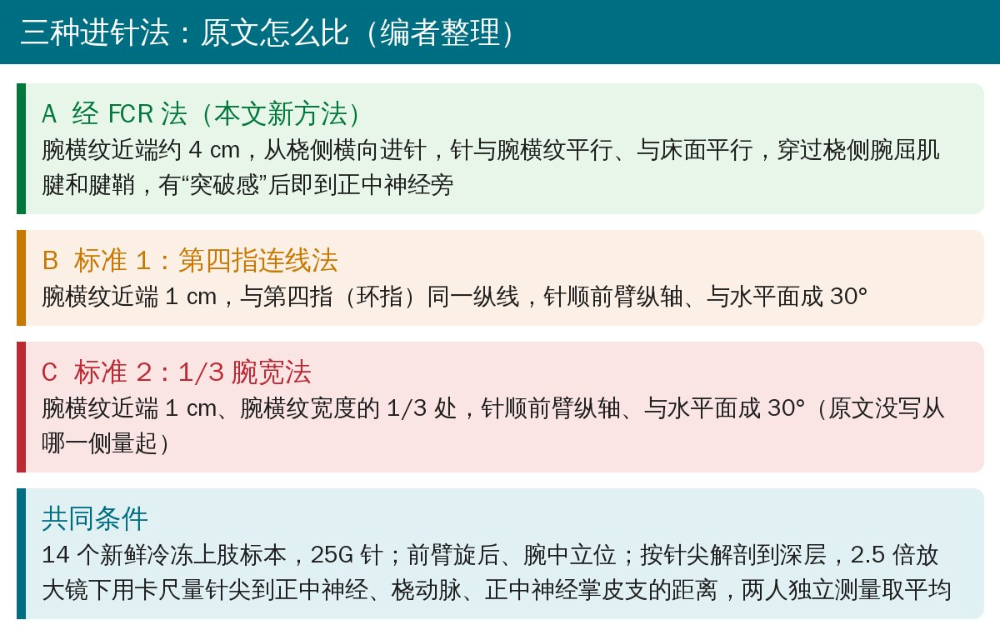
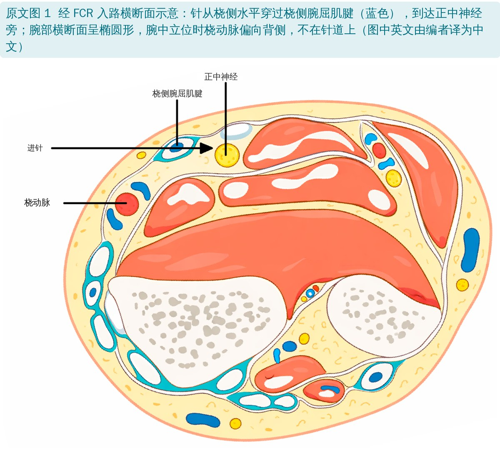
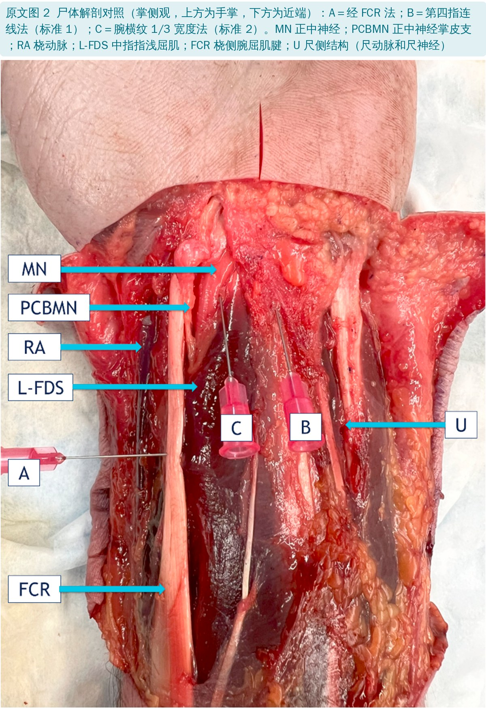
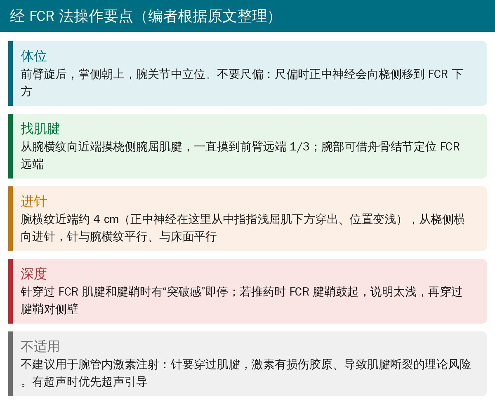
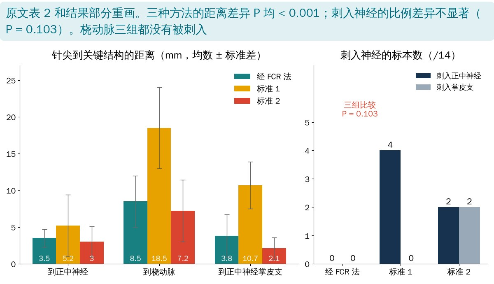

🔖原文信息（编者中文重排）
📚 文献信息
▪ Chen CJ, Sobol KR, Hickey CP, VanNest DS, Ibrahim JM, Raphael J. A Tactile Trans-Flexor Carpi Radialis Surface Landmark Technique for Median Nerve Local Injection: A Cadaveric Study. J Hand Surg Glob Online. 2026;8:101034. doi:10.1016/j.jhsg.2026.101034
▪ 中文题目：经桡侧腕屈肌腱的体表触诊定位法用于正中神经局部注射：尸体研究
▪ 作者单位：美国托马斯·杰斐逊大学骨科（费城 Jefferson Einstein 医院）、Hoag 骨科研究所
▪ 文章类型：尸体解剖研究（基础科学解剖研究，证据等级 V 级），14 个上肢标本，没有活体数据
腕部正中神经阻滞是手外科、急诊科常用的局部麻醉方法。传统做法大多靠掌长肌腱定位：在腕横纹附近、掌长肌腱旁边进针。问题是掌长肌腱约 15% 的人天生没有（不同人群报道差异很大），这时定位就没了参照，容易多次进针、麻醉不全。
另外，针碰到正中神经即使没造成永久损伤，也会引起触电样剧痛，患者猛地缩手，操作就不受控了。作者在临床上发现，针穿过桡侧腕屈肌（FCR）腱时只是轻微、可预期的不适，还能给术者一个“突破感”的手感反馈。于是他们想验证：穿过 FCR 腱进针（经 FCR 法）能不能作为一个不依赖掌长肌的稳定定位方法。
• 标本：14 个新鲜冷冻上肢，均为单侧捐献（没有同一人的两侧）；平均 61 岁（29～81 岁），女 6、男 8，左 6、右 8；3 个没有掌长肌
• 三种方法对比：经 FCR 法（新方法），以及两种同样不依赖掌长肌的传统体表定位法：第四指连线法（标准 1）和 1/3 腕宽法（标准 2）
• 测量：25G 针进针后，沿针尖解剖到深层，2.5 倍放大镜下用卡尺量针尖到正中神经、桡动脉、正中神经掌皮支的距离；两人独立测量取平均，两人最大差异 0.1 mm
• 统计：三种方法的距离用 Kruskal-Wallis 检验比较，是否刺入神经血管用卡方检验

🔖三种进针法对比（编者根据原文整理）
• 体位：前臂旋后、掌侧朝上，腕关节中立位，不要尺偏
• 找肌腱：从腕横纹向近端触摸 FCR 腱，一直摸到前臂远端 1/3；舟骨结节可作为 FCR 远端的参照（体型较胖的人也容易摸到）
• 进针点：腕横纹近端约 4 cm、FCR 腱处
• 方向：从桡侧横向进针，从近端往远端看，针与腕横纹平行；原文图 1 和图 2 中针都与床面平行
• 深度：针穿过 FCR 腱和腱鞘、出现“突破感”就到了正中神经旁边

🔖原文图 1（图中英文由编者译为中文）

🔖原文图 2（缩写保留原文，中文对照见图上方）
为什么选 4 cm？解剖中作者发现，正中神经在腕横纹近端平均 4.0 cm（2.8～4.8 cm）处从中指指浅屈肌肌腹下方穿出、位置变浅；这里中指指浅屈肌像一层“顶棚”，下方形成一个纤维间隙，适合把麻药注到神经旁边而不是神经里。这个位置还在正中神经掌皮支分出之前，作者认为一针可能同时麻醉手掌和桡侧手指。

🔖操作要点（编者根据原文整理）
原文表 2 三种方法针尖到关键结构的距离（mm，均数 ± 标准差）
| 方法 | 到正中神经 | 到桡动脉 | 到正中神经掌皮支 |
|---|---|---|---|
| 经 FCR 法 | 3.5 ± 1.2 | 8.5 ± 3.5 | 3.8 ± 2.9 |
| 标准 1 | 5.2 ± 4.2* | 18.5 ± 5.5 | 10.7 ± 3.2 |
| 标准 2 | 3.0 ± 2.1* | 7.2 ± 4.2 | 2.1 ± 1.5* |
| P 值 | < 0.001 | < 0.001 | < 0.001 |
*该方法在部分标本中刺入了这一结构。标准 1：沿第四指纵线、腕横纹近端 1 cm 进针；标准 2：腕横纹近端 1 cm、腕宽 1/3 处、与水平面成 30° 进针。编者翻译
• 经 FCR 法 14 例中 0 例刺入正中神经，也没有刺入掌皮支和桡动脉；针尖离正中神经平均 3.5 mm（2.0～6.8 mm），既靠近又没扎进去
• 标准 1：4 例刺入正中神经；标准 2：2 例刺入正中神经、2 例刺入掌皮支（14%）
• 但三种方法刺入正中神经的比例差异没有统计学意义（P = 0.103）
• 三种方法都没有刺入桡动脉；经 FCR 法也没有一针停在前臂筋膜浅层
• 其他测量：正中神经直径平均 6.1 mm，尺神经 3.3 mm；皮肤厚度 2.7 mm，腕围 17.5 cm

🔖结果对比（编者根据原文表 2 重画）
原文表 1 经 FCR 法：按有无掌长肌分组（mm，均数 ± 标准差）
| 掌长肌 | 到正中神经 | 到桡动脉 | 到正中神经掌皮支 |
|---|---|---|---|
| 无（3 例） | 2.7 ± 0.6 | 7.6 ± 2.4 | 6.4 ± 5.5 |
| 有（11 例） | 3.8 ± 1.2 | 8.7 ± 3.8 | 3.0 ± 1.4 |
| 全部 | 3.5 ± 1.2 | 8.5 ± 3.5 | 3.8 ± 2.9 |
| P 值 | 0.171 | 0.661 | 0.072 |
编者翻译
• 经 FCR 法在有、无掌长肌的标本里距离都没有显著差异，作者据此认为它不依赖掌长肌
• 正中神经穿出中指指浅屈肌的位置：有掌长肌者平均 4.0 cm，无掌长肌者 4.4 cm
• 不过没有掌长肌的只有 3 例，“没差异”更可能是样本太小测不出来，不能当作“已证明一样”
原文表 3 三种方法按有无掌长肌分组（mm，均数 ± 标准差）
| 分组 / 方法 | 到正中神经 | 到桡动脉 | 到正中神经掌皮支 |
|---|---|---|---|
| 无掌长肌：经 FCR 法 | 2.7 ± 0.6 | 7.6 ± 2.4 | 6.4 ± 5.5 |
| 无掌长肌：标准 1 | 6.0 ± 2.7 | 23.0 ± 7.3 | 14.3 ± 4.3 |
| 无掌长肌：标准 2 | 2.8 ± 1.6* | 5.9 ± 4.1 | 3.2 ± 3.8* |
| 无掌长肌：P 值 | 0.183 | 0.140 | 0.253 |
| 有掌长肌：经 FCR 法 | 3.8 ± 1.2 | 8.7 ± 3.8 | 3.0 ± 1.4 |
| 有掌长肌：标准 1 | 5.0 ± 4.7* | 17.5 ± 5.7 | 9.9 ± 2.7 |
| 有掌长肌：标准 2 | 3.1 ± 2.3* | 7.5 ± 4.4 | 1.9 ± 1.6* |
| 有掌长肌：P 值 | 0.195 | 0.001 | < 0.001 |
*刺入该结构。标准 1 的 4 例正中神经刺入都在有掌长肌组；标准 2 在两组各有 1 例刺入正中神经、1 例刺入掌皮支。编者翻译
作者整理了 1980 年以来 12 种正中神经注射定位法（原文表 4）。多数在腕横纹近端约 1 cm、以较浅的角度进针；7 种依赖掌长肌。只有 Dubert 和 Racasan（2006）也主张穿过 FCR 腱，但他们在腕横纹近端 1 cm、斜 45° 进针，作者认为这个方向更可能穿过示指指浅屈肌腱后碰到桡骨，而不是到达正中神经旁。
原文表 4 文献中避免医源性损伤的正中神经注射定位法（1980～2026）
| 作者 | 年份 | 定位 |
|---|---|---|
| Gelberman 等 | 1980 | 腕远侧横纹近端 1 cm，掌长肌与 FCR 之间，45°～60° |
| Green | 1984 | 掌长肌尺侧 |
| Linskey 和 Segal | 1990 | 腕远侧横纹处掌长肌尺侧；没有掌长肌时对准第四指 |
| Frederick 等 | 1992 | 掌长肌与尺侧腕屈肌之间，腕横纹稍近端；没有掌长肌时对准第四指指浅屈肌腱 |
| Kasten 和 Louis | 1996 | 从豌豆骨桡侧缘起，向远端、背侧朝腕管中部 |
| Dammers 等 | 1999 | 前臂掌侧掌长肌与 FCR 之间，腕横纹近端 4 cm |
| Graham 等 | 2004 | FCR 尺侧 |
| Dubert 和 Racasan | 2006 | 腕横纹近端 1 cm 穿过 FCR 腱，针向内侧缘斜 45° |
| MacLennan 等 | 2009 | 腕横纹处 FCR 尺侧 |
| Kamanli 等 | 2011 | 腕横纹远端、掌长肌尺侧 |
| Menge 等 | 2016 | 从桡骨茎突起算腕宽的 30%～33% |
| Brooks 等 | 2019 | 掌长肌桡侧、正中线或 FCR 尺侧，腕中点桡侧 8～10 mm |
原文表题写的是“1980～2026”，但所列方法最晚到 2019 年。编者翻译
• FCR 腱人人都有、容易摸到，还有自己的腱鞘：针太浅时推药会让腱鞘鼓起，术者可以据此再往深处走一点，相当于自带“深度提示”
• 在腕横纹近端 4 cm的这个间隙，作者在临床上能无阻力注入约 20 mL麻药，而更远端的方法通常 5～10 mL 就推不动了
• 在前臂远端注射，神经还有活动余地，不像进了腕管后那样被“卡住”，误注入神经内的风险可能更低
• 局限：针要穿过肌腱，不适合腕管内激素注射（激素有损伤肌腱胶原、导致断裂的理论风险）；做治疗性注射还是首选超声引导或不穿肌腱的方法
• 作者定位：经 FCR 法目前只是“经解剖验证”的一种选择，适合急诊室、没有超声的小手术室等资源有限的场景；需要和传统体表定位、超声引导做前瞻性临床对比
• 只是尸体：没有血流、组织张力和患者缩手反射，不能回答麻醉效果、起效时间、疼痛程度；文中“患者更舒服”“20 mL 无阻力”都来自作者的临床印象，没有数据
• 样本小：14 个标本，无掌长肌的只有 3 个；“刺入率没差异”（P = 0.103）和“有无掌长肌没差异”都可能是检验效能不足
• 比较对新方法有利：作者自己承认，为了解剖时针不移位，针要扎得深一些，这可能让两种传统方法的刺入率偏高；而且只比了两种不依赖掌长肌的方法，没比最常用的掌长肌旁入路
• “最靠近神经”不等于“最好”：Kruskal-Wallis P < 0.001 只说明三组有差异，没做两两比较；标准 2 离正中神经其实更近（3.0 mm），离桡动脉也更近
• 统计方法不太对路：从原文图 2 看，同一标本上三种方法都扎了针，数据是配对的，却用了独立样本的 Kruskal-Wallis 和卡方检验；每组刺入数只有 0～4 例，卡方检验也不如 Fisher 精确检验合适
• “新”的程度有限：Dammers 等 1999 年就在掌长肌与 FCR 之间、腕横纹近端 4 cm 注射；Dubert 和 Racasan 2006 年也已穿过 FCR 腱进针。本文的新意主要在“近端 4 cm＋横向穿 FCR”的组合
• 固定 4 cm 未必刚好：正中神经穿出的位置在 2.8～4.8 cm 之间，固定在 4 cm 进针，个别人会偏离 1 cm 左右
• 优点：两人独立测量、误差很小；同时报告了到神经、动脉、掌皮支三个结构的距离；作者声明没有利益冲突
• 进针角度自相矛盾：摘要和方法都写针与“垂直方向约 0°”（即垂直于床面），方法紧接着又说针“与床面平行”；原文图 1、图 2 显示的都是从桡侧水平进针，讨论里又称是“垂直穿过 FCR 腱”的路径
• “5 种用 FCR 或腕宽”数不出来：讨论说表 4 的 12 种方法里 7 种靠掌长肌、5 种靠 FCR 位置或腕宽百分比；但表 4 里靠 FCR 或腕宽的只有 Graham、Dubert、MacLennan、Menge 4 种，Kasten 和 Louis 用的是豌豆骨
• 分组 P 值和总体 P 值对不上：表 3 中有掌长肌的 11 个标本，三种方法到正中神经的距离（3.8、5.0、3.1 mm）与全部 14 个标本（3.5、5.2、3.0 mm）几乎一样，P 却分别是 0.195 和 < 0.001；只多 3 个标本很难让 P 值差这么多
• 摘要说的比做的多：摘要称“无论有无掌长肌，周围结构的损伤率都没有差异”，但正文只按有无掌长肌比较了经 FCR 法的距离（表 1），没有做损伤率的分组比较
• 掌长肌“出现率”写反了：引言说约 15% 的人没有掌长肌，讨论却说掌长肌的“出现率”在 1.5%～63.9% 之间；所引文献报道的这个范围其实是缺如率
• 标准 2 的描述不一致：方法写“腕横纹宽度的 1/3”，表 2 注写“腕直径的 1/3”，都没交代从桡侧还是尺侧量起
• 刺入后距离怎么算没交代：表 2、表 3 中标星号的平均距离包含了刺入神经的标本，刺入时距离记为多少（0 还是别的）没有说明
• 表 4 年份：表题写 1980～2026，所列方法最晚是 2019 年；讨论称“回顾了 1980～2026 年的技术”，但没交代怎么检索
• 文字小错：“confirming its position at the adjacent to the MN”“1 cm proximal to the wrist crease technique”等句子不通；首页“Available online xxx”未补全
• 多一个备选定位：摸不到掌长肌（约 15% 的人没有）时，FCR 腱是个稳定的参照；在腕横纹近端约 4 cm 从桡侧横向穿过 FCR 腱，可能到达正中神经旁
• 不要用于腕管激素注射：针要穿过肌腱，激素有导致肌腱损伤的理论风险；治疗性腕管注射优先超声引导
• 有超声就用超声：本研究只证明了尸体上的解剖可行性，没有任何临床疗效和安全性数据；作者自己也说要等前瞻性临床研究
• 神经阻滞须由有资质的医生操作。对康复治疗师来说，熟悉腕部 FCR 腱、正中神经和掌皮支的位置关系，有助于触诊、评估腕管综合征和理解术后感觉异常的来源
欢迎关注骨科康复小黄公众号，获取更多物理治疗的专业知识！
📄参考文献：
Chen CJ, Sobol KR, Hickey CP, VanNest DS, Ibrahim JM, Raphael J. A Tactile Trans-Flexor Carpi Radialis Surface Landmark Technique for Median Nerve Local Injection: A Cadaveric Study. J Hand Surg Glob Online. 2026;8:101034. doi:10.1016/j.jhsg.2026.101034
原文以 CC BY-NC-ND 4.0 协议开放获取，版权归原作者所有（© 2026 The Authors，Elsevier 代美国手外科学会出版）。本文为非商业的学术交流中文解读：原文图 1、图 2 引自原文，图 1 中的英文由编者译为中文；表格为编者中文翻译；首图、对比卡、操作要点卡和结果图为编者根据原文整理。仅供学习交流，如有侵权请联系删除。